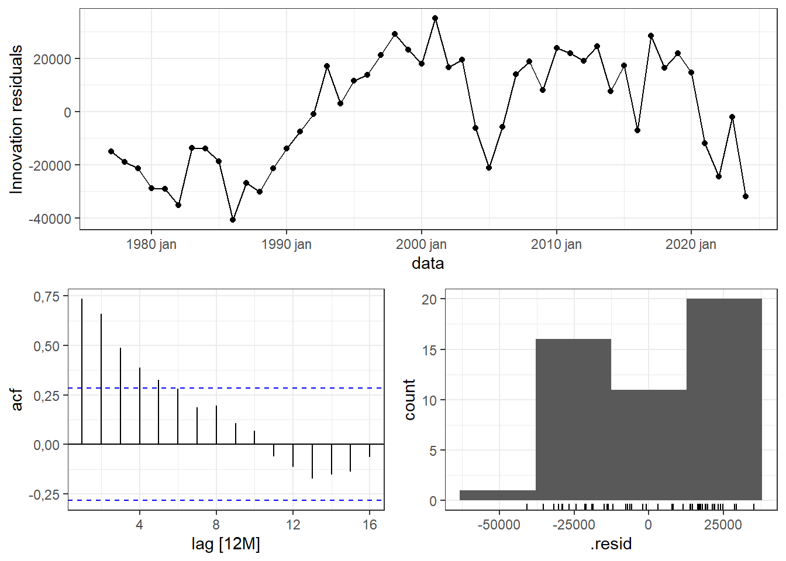
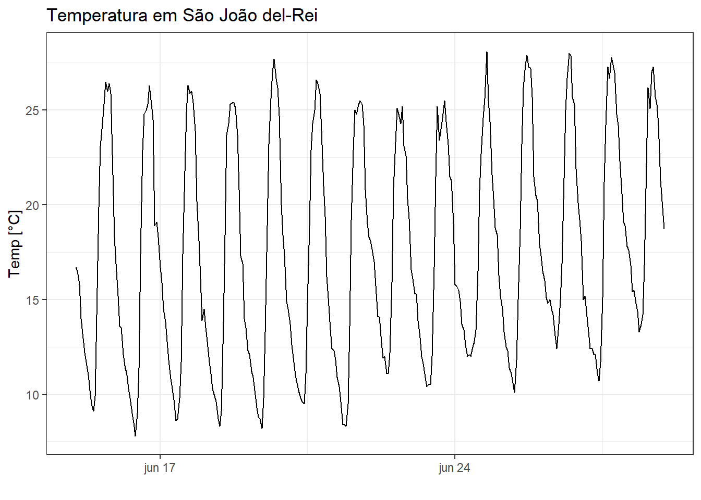
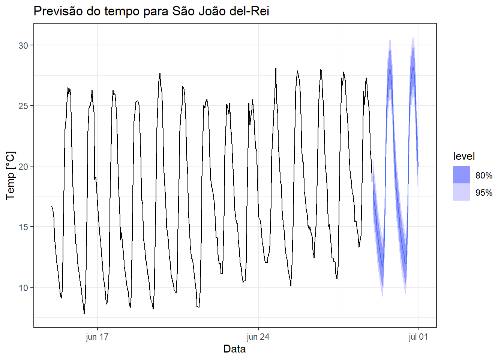

4 Regressão de séries temporais
4.1 Regressão linear simples
A regressão de séries temporais serve para prever uma série em função de outra ou mais relacionadas. Não é o método mais usual e sofisticado, uma vez que os métodos mais avançados consideram o padrão da própria série para modelagem e previsão. Entretanto, em algumas situações tal abordagem pode ser útil. Ademais, há possibilidade de combinar a regressão com ARIMA, conforme será abordado futuramente.
Seja um problema onde deseja-se prever uma série temporal contínua, \(y_1, y_2, ..., y_T\), em função de outra, \(x_1, x_2, ..., x_T\).
Na Figura 4.1 são plotadas as séries temporais anuais de área plantada em hectare e grãos produzidos em toneladas no Brasil de 1977 a 2022, http://www.ipeadata.gov.br. As séries apresentam tendência de crescimento não linear.
Ao plotar um diagrama de dispersão entre as séries, pode-se observar uma correlação linear positiva alta entre estas, conforme Figura 4.2.
Conforme observado na Figura 4.3, pode-se considerar em diversos casos a aproximação de uma função linear para tal relação.

O modelo linear plotado em azul pode ser descrito conforme Equação abaixo, onde \(\beta_0\) é uma constante e \(\beta_1\) é um coeficiente linear.
\[ \hat{y}_t = \beta_0+\beta_{1}x_t \]
As observações da série dependente ou resposta podem ser descritas conforme segue, como sendo o valor estimado adicionado, \(\hat y_t\), de um termo de erro ou resíduo, \(\varepsilon_t\).
\[ \begin{aligned} y_t = \hat{y}_t + \varepsilon_t \\ y_t = \beta_0 + \beta_1x_t + \varepsilon_t \\ \end{aligned} \]
Considerando as \(T\) observações das séries, \((x_1, y_1), (x_2, y_2), ..., (x_T, y_T)\), pode-se pensar em um modelo que minimize os erros de previsão. Uma vez que o erro é normalmente distribuído, com média nula e variância \(\sigma_\varepsilon^2\), sendo os resíduos normalmente distribuídos, com média nula e variância igual a \(\sigma_\varepsilon^2\), \(\varepsilon \sim N(0,\sigma_\varepsilon^2)\), pode-se trabalhar a minimização da soma dos quadrados dos erros de previsão, \(\sum_{t=1}^{T}\varepsilon_t^2\). A Figura Figura 4.4 plota em linhas vermelhas verticais os resíduos. O modelo plotado minimiza a soma dos quadrados de tais erros.

A análise à seguir expõe os coeficientes do modelo estimado com teste t para significância destes. Neste curso não será dada ênfase na inferência, mas na previsão. De forma simples um valor t com alta magnitude ou um p-valor (Pr(>|t|)) baixo indica risco baixo de rejeitar a hipótese nula de ausência de efeito da variável ou série independente (\(x_t\)).
Series: producao
Model: TSLM
Residuals:
Min 1Q Median 3Q Max
-42054 -17157 1734 17910 39834
Coefficients:
Estimate Std. Error t value Pr(>|t|)
(Intercept) -1.896e+05 1.500e+04 -12.64 <2e-16 ***
area_plantada 6.782e+00 3.138e-01 21.61 <2e-16 ***
---
Signif. codes: 0 '***' 0.001 '**' 0.01 '*' 0.05 '.' 0.1 ' ' 1
Residual standard error: 23540 on 45 degrees of freedom
Multiple R-squared: 0.9121, Adjusted R-squared: 0.9102
F-statistic: 467.2 on 1 and 45 DF, p-value: < 2.22e-16O modelo para prever a produção de grãos em função da área plantada fica:
\[ \hat{y}_t = -1,89 \times 10^{5} + 6,782x_t \]
4.2 Regressão linear múltipla
No caso de onde há múltiplas séries independentes ou regressoras de interesse, \(x_{t1}, x_{t2}, ..., x_{tk}\), onde \(k\) é o número de séries consideradas para estimar \(y_t\), pode-se considerar o modelo com um coeficiente linear associado a cada variável, isto é:
\[ \hat{y}_t = \beta_0 + \beta_1x_{t1} + \beta_2x_{t2} + \cdots + \beta_kx_{tk} = \beta_0 + \sum_{j=1}^{k}\beta_jx_{tj}, \]
ou de forma matricial com \(\mathbf{X}_{[T\times (k+1)]}\) e \(\mathbf{\beta}_{[(k+1) \times 1]}\):
\[ \begin{aligned} \hat{\mathbf{y}} = \mathbf{X}\mathbf{\beta} \end{aligned}, \]
onde a matrix \(\mathbf{X}\) contém uma coluna unitária para a constante e uma coluna para cada série independente:
\[ \mathbf{X} = \begin{bmatrix} 1 & x_{11} & x_{12} & \cdots & x_{1k}\\ 1 & x_{21} & x_{22} & \cdots & x_{2k} \\ \vdots & \vdots & \vdots & \ddots & \vdots\\ 1 & x_{T1} & x_{T2} & \cdots & x_{Tk} \\ \end{bmatrix}, e\\ \]
e \(\beta\) consite no vetor de coeficientes:
\[ \mathbf{\beta}^T = \begin{bmatrix} \beta_0 & \beta_1 & \cdots & \beta_k\\ \end{bmatrix}. \\ \]
Os valores observados da série \(\mathbf{y}\) podem ser recuperados somando os valores preditos e o erro.
\[ \begin{aligned} \mathbf{y} = \mathbf{X}\mathbf{\beta} + \mathbf{\varepsilon} \end{aligned} \]
Tomando tal notação, a soma dos quadrados dos erros pode ser descrita como \(\sum_{t=1}^{T}\varepsilon_t^2 = \mathbf{\varepsilon}^T\mathbf{\varepsilon}\). Desenvolvendo tal expressão tem-se:
\[ \begin{aligned} L(\mathbf{\beta}) = \mathbf{\varepsilon}^T\mathbf{\varepsilon} = (\mathbf{y} - \mathbf{X}\mathbf{\beta})^T(\mathbf{y} - \mathbf{X}\mathbf{\beta}) \\ \mathbf{y}^T\mathbf{y} - 2\mathbf{\beta}^T\mathbf{X}^T\mathbf{y} + \mathbf{\beta}^T\mathbf{X}^T\mathbf{X}\mathbf{\beta} \end{aligned} \]
Para minimizar \(L\) em relação à estimativa de \(\mathbf{\beta}\), pode-se diferenciar tal quantidade em relação à \(\mathbf{\beta}\) e igualar a zero:
\[ \begin{aligned} \frac{\partial L}{\partial \mathbf{\beta}} = -2\mathbf{X}^T\mathbf{y} + 2\mathbf{X}^T\mathbf{X}\mathbf{\beta} = 0 \\ \hat{\mathbf{\beta}} = (\mathbf{X}^T\mathbf{X})^{-1}(\mathbf{X}^T\mathbf{y}) \end{aligned} \]
A estimativa dos coeficientes \(\hat\beta\) obtida minimiza a soma dos quadrados dos resíduos, \(\sum \varepsilon_i^2\), sendo portanto as estimativas de mínimos quadrados.
Seja a série multivariada de índices de produção de bens de capital, de consumo duráveis, intermediários e de consumo não duráveis, plotada na Figura 4.5.
Observa-se na Figura 4.6 diagramas de dispersão e correlações aos pares, ficando clara a relação linear entre tais índices.

Uma vez que os bens de consumo duráveis dependem dos bens de capital, os quais consistem nos ativos de empresas para produzir produtos ou serviços, e dos bens intermediários, supõe-se a possibilidade de obter um modelo de regressão múltipla desta série em função daquelas. A seguir apresenta-se o modelo de regressão múltipla estimado para a prever o índice de bens de consumos duráveis \(y_t\) em função dos de capital, \(x_{t1}\), e de produtos intermediários, \(x_{t2}\). Ambos apresentaram significância estatística.
Series: consumo_duraveis
Model: TSLM
Residuals:
Min 1Q Median 3Q Max
-38.361 -7.949 1.382 8.824 33.937
Coefficients:
Estimate Std. Error t value Pr(>|t|)
(Intercept) -60.12405 9.55694 -6.291 1.28e-09 ***
capital 0.73046 0.05886 12.409 < 2e-16 ***
intermediarios 1.09143 0.12334 8.849 < 2e-16 ***
---
Signif. codes: 0 '***' 0.001 '**' 0.01 '*' 0.05 '.' 0.1 ' ' 1
Residual standard error: 13.04 on 268 degrees of freedom
Multiple R-squared: 0.7734, Adjusted R-squared: 0.7717
F-statistic: 457.4 on 2 and 268 DF, p-value: < 2.22e-16O modelo obtido pode ser escrito confirme segue:
\[ \hat y_t = -60,12 + 0,73x_{t1} + 1,09x_{t2} \]
4.3 Desempenho do modelo de regressão
Uma forma de medir o ajuste do modelo obtido aos dados seria a partir do cálculo do coeficiente de determinação múltipla, \(R^2\), conforme segue,
\[ \begin{align} R^2 = 1- SS_{E}/SS_T \\ R^2 = 1- \frac{\sum_{i=1}^{N}(y_i-\hat{y}_i)^2}{\sum_{i=1}^{N}(y_i-\overline{y}_i)^2}, \end{align} \]
onde \(SS_E\) consiste na soma dos quadrados dos erros e \(SS_T\) consiste na soma dos quadrados total, ou no numerador da variância da série a ser predita.
O \(R^2\) sempre aumenta ao se adicionar novos termos no modelo, mesmo se estes não são significativos, uma vez que não leva em conta os graus de liberdade no cálculo. O coeficiente de determinação múltipla ajustado, \(R^2_{aj}\), é uma métrica mais interessante, já que considera as médias dos quadrados ao invés das somas dos quadrados dos erros, conforme segue:
\[ \begin{align} R^2 = 1- MS_{E}/MS_T \\ R^2 = 1- \frac{\sum_{i=1}^{N}(y_i-\hat{y}_i)^2/(T-K-1)}{\sum_{i=1}^{N}(y_i-\overline{y}_i)^2/(T-1)}, \end{align} \]
onde \(K\) é o número de termos no modelo, \(MS_E\) consiste média dos quadrados dos erros, que consiste na estimativa de variância dos resíduos, enquanto \(MS_T\) consiste na média dos quadrados total, ou na variância da série a ser predita.
Para o modelo de regressão simples para produção de grãos em função da área plantada foi obtido um ajuste de mais de 91%, garantindo tal percentual de explicação da variabilidade da série de produção em função da área plantada. A Figura 4.7 plota a série de produção de grãos observada e a aproximada pelo modelo de regressão.
A Figura 4.8 plota a série do índice de produção de bens de consumo duráveis observada e a aproximada pelo modelo de regressão múltipla.
4.4 Diagnóstico dos resíduos
A Figura 4.9 apresenta alguns gráficos dos resíduos do modelo de produção de grãos em função da área plantada. Pode-se observar que o primeiro gráfico apresenta tendências em alguns instantes, com padrão não aleatório, indicando presença de autocorrelação. O correlograma confirma presença de autocorrelação nos resíduos até a defasagem de ordem 4. Logo, há informação importante não capturada pelo modelo de regressão.

4.5 Preditores úteis
Muitas séries temporais costumam apresentar tendência. Um modelo linear simples pode considerar o tempo, \(t\), como preditor, de forma a capturar a tendência.
\[ \hat{y}_t = \beta_0+\beta_{1}t \]
Pode-se também considerar variáveis dicotômicas ou binárias (dummy) para considerar a sazonalidade, feriados, ou algum evento especial. Por exemplo, para sazonalidade anual com uma série de frequência quadrimestral, pode-se considerar como variávis dummy as expostas na Tabela Tabela 4.1.
| Quadrimestre | \(d_{1,t}\) | \(d_{2,t}\) | \(d_{3,t}\) | \(d_{4,t}\) |
|---|---|---|---|---|
| Q1 | 1 | 0 | 0 | 0 |
| Q2 | 0 | 1 | 0 | 0 |
| Q3 | 0 | 0 | 1 | 0 |
| Q4 | 0 | 0 | 0 | 1 |
| Q1 | 1 | 0 | 0 | 0 |
| \(\vdots\) | \(\vdots\) | \(\vdots\) | \(\vdots\) | \(\vdots\) |
A Figura 4.10 exibe a série temporal de temperatura de São João del-Rei para os dias 15 a 28 de junho com frequência horária.

A Figura 4.11 expõe o gráfico sazonal da mesma série. Observa-se sazonalidade diária e uma tendência de crescimento, especialmente da temperatura mínima, para os dias considerados.

Um modelo de regressão considerando a tendência e sazonalidade para este caso deve considerar como variáveis dummy o dia, de forma a capturar a variação hora a hora. Logo, neste caso, 24 variáveis dummy são criadas. Observa-se que além da tendência a maior parte de tais variáveis apresenta significância e o modelo contempla mais de 95% de variabilidade da série.
Series: Temp
Model: TSLM
Residuals:
Min 1Q Median 3Q Max
-3.20212 -0.76300 -0.08292 0.87326 2.92845
Coefficients:
Estimate Std. Error t value Pr(>|t|)
(Intercept) 15.0055227 0.3406085 44.055 < 2e-16 ***
trend() 0.0088820 0.0006822 13.020 < 2e-16 ***
season()day2 -0.8445963 0.4572598 -1.847 0.065685 .
season()day3 -1.5463355 0.4572613 -3.382 0.000812 ***
season()day4 -2.4052175 0.4572639 -5.260 2.69e-07 ***
season()day5 -3.3355281 0.4572674 -7.294 2.51e-12 ***
season()day6 -4.0515530 0.4572720 -8.860 < 2e-16 ***
season()day7 -4.5675778 0.4572776 -9.989 < 2e-16 ***
season()day8 -5.1978884 0.4572842 -11.367 < 2e-16 ***
season()day9 -5.6281990 0.4572918 -12.308 < 2e-16 ***
season()day10 -6.2156525 0.4573005 -13.592 < 2e-16 ***
season()day11 -6.4245345 0.4573102 -14.049 < 2e-16 ***
season()day12 -5.3119879 0.4573208 -11.615 < 2e-16 ***
season()day13 -2.1708700 0.4573326 -4.747 3.16e-06 ***
season()day14 2.6273909 0.4573453 5.745 2.19e-08 ***
season()day15 6.6756517 0.4573590 14.596 < 2e-16 ***
season()day16 8.3024840 0.4573738 18.153 < 2e-16 ***
season()day17 9.1650305 0.4573895 20.038 < 2e-16 ***
season()day18 9.7490056 0.4574063 21.314 < 2e-16 ***
season()day19 9.8258379 0.4574241 21.481 < 2e-16 ***
season()day20 8.9883845 0.4574429 19.649 < 2e-16 ***
season()day21 7.7795024 0.4574628 17.006 < 2e-16 ***
season()day22 4.5277633 0.4574836 9.897 < 2e-16 ***
season()day23 2.9474527 0.4575055 6.442 4.47e-10 ***
season()day24 1.4742850 0.4575284 3.222 0.001407 **
---
Signif. codes: 0 '***' 0.001 '**' 0.01 '*' 0.05 '.' 0.1 ' ' 1
Residual standard error: 1.21 on 311 degrees of freedom
Multiple R-squared: 0.961, Adjusted R-squared: 0.958
F-statistic: 319.5 on 24 and 311 DF, p-value: < 2.22e-16Há uma tendência de aumento da temperatura nos dias considerados de 0,00888 °C por hora, ou 0,213°C por dia. Cada coeficiente das variáveis dummy expõe a diferença da respectiva hora em relação à primeira hora do dia. Por exemplo, às 6 da manhã a diferença de temperatura em relação a 1 da manhã é igual a -4.05°C. A Figura Figura 4.12 apresenta a série observada e a prevista pelo modelo de regressão.

A Figura 4.13 apresenta os valores previstos e observados plotados com as horas do dia separadas em cores distintas. Observa-se o excelente ajuste do modelo e a variação da temperatura segundo hora do dia.
4.6 Seleção de preditores
A Figura 4.14 exibe séries temporais de petróleo refinado e derivados produzidos no Brasil em \(m^3\), https://www.gov.br/anp/pt-br/centrais-de-conteudo/dados-estatisticos. O petróleo considera o volume nacional e importado.
A Figura 4.15 expõe um gráfico de correlação entre tais séries. As séries foram agrupadas segundo a magnitude e sinal das correlações. A série de petróleo refinado tem correlação positiva com asfalto, oléo diesel, outros não energéticos, querosene de avião, coque e gasolina e correlação negativa ou desprezível com as demais séries.
A seguir expõe-se um modelo de regressão múltipla do petróleo refinado em função do volume produzido dos derivados. Apenas GLP, coque, querosene de avião, querosene iluminante e solvente não apresentaram significância estatística.
Series: petroleo
Model: TSLM
Residuals:
Min 1Q Median 3Q Max
-4.927e-11 -7.235e-12 -5.715e-13 5.091e-12 4.892e-10
Coefficients:
Estimate Std. Error t value Pr(>|t|)
(Intercept) 3.528e-11 3.190e-11 1.106e+00 0.269750
GLP -5.660e-17 4.844e-17 -1.169e+00 0.243583
asfalto -3.794e-16 5.256e-17 -7.218e+00 4.93e-12 ***
coque -9.954e-17 6.589e-17 -1.511e+00 0.132011
gasolina -1.357e-16 1.725e-17 -7.869e+00 7.78e-14 ***
lubrificante -9.102e-16 1.935e-16 -4.703e+00 4.02e-06 ***
nafta -3.579e-16 2.820e-17 -1.269e+01 < 2e-16 ***
oleo_combustivel -1.703e-16 1.625e-17 -1.048e+01 < 2e-16 ***
oleo_diesel -2.345e-16 1.589e-17 -1.475e+01 < 2e-16 ***
outros_nao_energeticos -3.699e-16 5.580e-17 -6.628e+00 1.73e-10 ***
parafina -2.542e-15 7.252e-16 -3.505e+00 0.000532 ***
petroleo 1.000e+00 1.090e-17 9.176e+16 < 2e-16 ***
querosene_aviao -2.851e-17 3.489e-17 -8.170e-01 0.414435
querosene_iluminante 5.304e-16 5.472e-16 9.690e-01 0.333249
solvente 2.219e-19 1.712e-16 1.000e-03 0.998967
---
Signif. codes: 0 '***' 0.001 '**' 0.01 '*' 0.05 '.' 0.1 ' ' 1
Residual standard error: 3.227e-11 on 281 degrees of freedom
Multiple R-squared: 1, Adjusted R-squared: 1
F-statistic: 1.21e+34 on 14 and 281 DF, p-value: < 2.22e-16Geralmente, em regressão múltipla é interessante selecionar um modelo com os melhores preditores, de forma a melhorar a capacidade preditiva do modelo. Além do \(R^2_{aj}\), outras métricas podem ser usadas, por exemplo o critério de informação de Akaike, AIC. O AIC considera o número de parâmetros e o erro do modelo, sendo esta uma métrica mais interessante para seleção de modelos.
\[ AIC = T\text{ log}\bigg(\frac{SS_E}{T}\bigg)+2(k+2) \]
A Tabela 4.2 apresenta os resultados de AIC, AIC corrigido e \(R^2_{aj}\) para o modelo completo e um modelo sem os parâmetros GLP, coque, querosene de avião, querosene iluminante e solvente. O modelo completo apresentou melhor resultado, uma vez que minimiza AIC e AICc.
| model | adj_r_squared | AIC | AICc |
|---|---|---|---|
| completo | 1 | -14284.33 | -14282.38 |
| reduzido | 1 | -13198.62 | -13197.69 |
A forma correta de realizar a remoção de coeficientes, conforme pode-se presumir pelo exemplo anterior, não é considerando a significância. Ademais, não sugere-se a remoção manual de coeficientes. Recomenda-se o uso de um algoritmo para tal fim. O algoritmo stepwise com eliminação para trás segue os seguintes passos:
- Comece com o modelo completo.
- Remova um preditor por vez. Mantenha o modelo com melhor desempenho, considerando por exemplo o AIC.
- Repita o procedimento até encontrar o melhor modelo.
4.7 Previsão
A previsão à frente não é geralmente possível quando se considera outras séries como preditores uma vez que não se conhece os valores futuros das séries. Por exemplo, no último caso do petróleo e derivados, os derivados vêm depois, sendo mais útil para previsão do volume refinado um modelo que considere ou a decomposição ou outros métodos mais sofisticados ainda não abordados, os quais levam em conta a autocorrelação da série. Entretanto, nos casos de regressão onde se utiliza como preditores a tendência e a sazonalidade a partir de variáveis dummy, é possível realizar a previsão à frente. A Figura Figura 4.16 expõe a previsão de dois dias à frente para a temperatura de São joão del-Rei utilizando o modelo anteriormente obtido.

Apesar de não ser possível realizar previsões à frente para casos de regressão considerando outras séries temporais como preditores, é possível realizar nestes casos previsões baseadas em cenários. Seja o caso exposto anteriormente onde deseja-se prever o índice de produção de bens de consumo duráveis em função dos bens de capital e intermediários. A Figura 4.17 expõe a previsão para dois cenários, um de aumento e outro de decréscimo nos índices de produção de bens de capital e intermediários. Este tipo de análise pode ser útil para adiantar possíveis cenários e viabilizar ações de planejamento.
4.8 Regressão não linear
Trasnformações podem ser interessantes para tratar a não lineariedade na série a ser predita e nas preditoras. Há muitos casos que a tendência observada em uma série não é linear. Nestes casos podem ser considerada transformação polinomial na tendência.
Uma opção interessante em alguns casos é utilizar transformação logarítimica em ambas séries independentes e dependente ou em apenas uma destas. Para o caso simples, com transformação em ambas as séries, tem-se o seguinte modelo.
\[ \text{log} (y_t) = \beta_0+\beta_1\text{log} (x_t) \]
Pode-se pensar em considerar um termo quadrático ou de ordem maior para a tendência, de forma a contemplar uma tendência não linear. Entretanto não se recomenda tal estratégia, uma vez que na maioria dos casos a previsão resultante extrapola muito a realidade.
\[ \hat{y}_t = \beta_0+\beta_{1}t+\beta_{2}t^2 \]
Uma abordagem mais interessante é pensar em modelos lineares por partes, de forma a considerar modelos lineares distintos em cada parte do horizonte temporal da série, consistindo em um modelo não linear formado por peças lineares (piecewise regression). Por exemplo, um modelo com uma divisão no tempo, \(\tau\), ´pode ser descrito conforme segue:
\[ \hat{y}_t = \beta_0+\beta_{1}t+\beta_{2}(t-\tau)_+, \] onde:
\[ (t-\tau)_+ = \bigg\{ \begin{align} 0 \text{, se } t< \tau \\ t-\tau \text{, se } t\geq \tau \end{align} \]
A Figura 4.18 expõe a série temporal da evolução do recorde na prova de 100m nado peito na categoria masculina. Pode-se observar que de 1960 até 1980 o melhor tempo diminuiu com maior intensidade, passando para outro padrão de variação de 1980 a 2000 e, posteriormente, de 2000 até aqui com outra tendência.
A Figura 4.19 expõe a mesma série com três modelos, um com transformação logarítimica na resposta, resultando em um modelo exponencial, um linear e outro linear por partes (piecewise). Foram consideradas duas partições, em 1977 e 2000. Pode-se observar que o terceiro caso parece interessante para ajustar-se melhor em cada momento considerado da série.